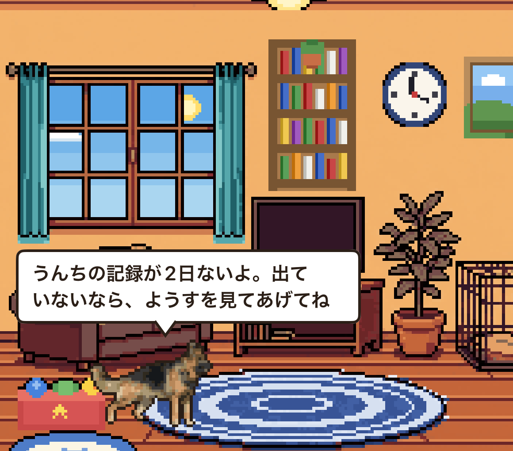
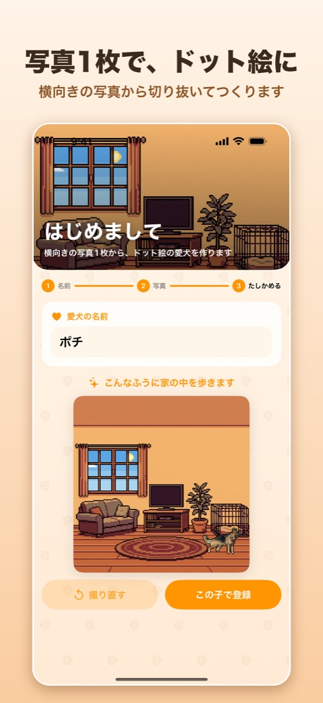
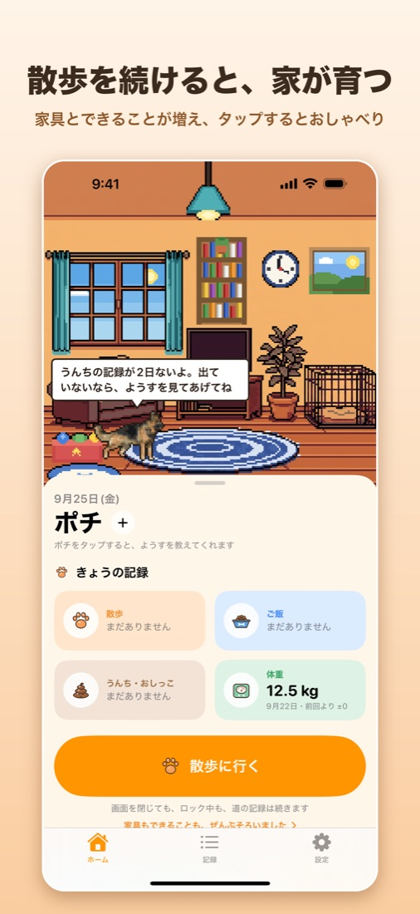
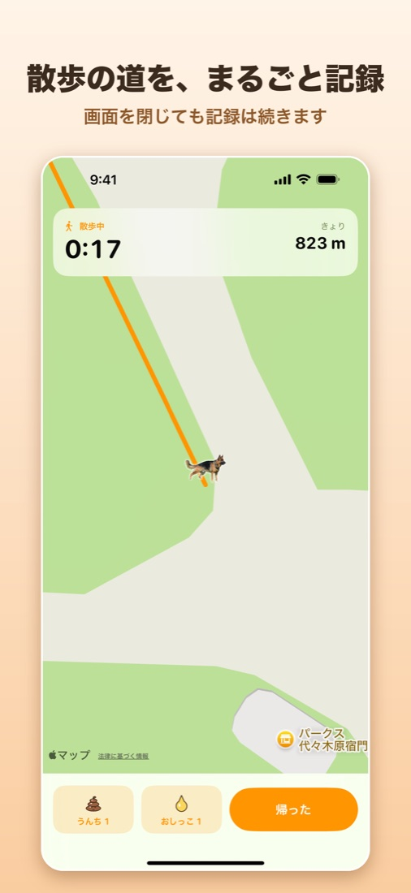
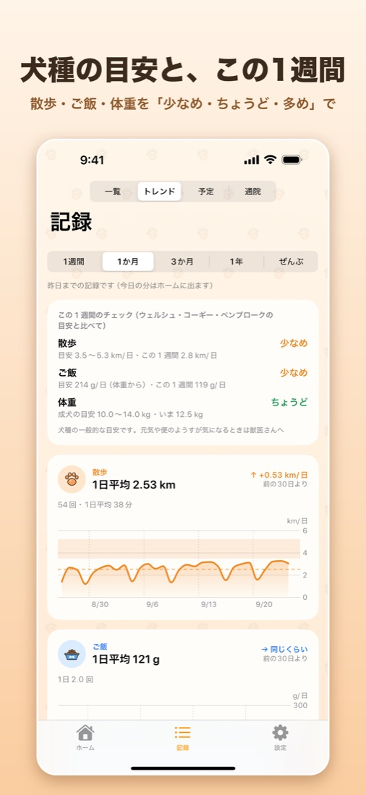
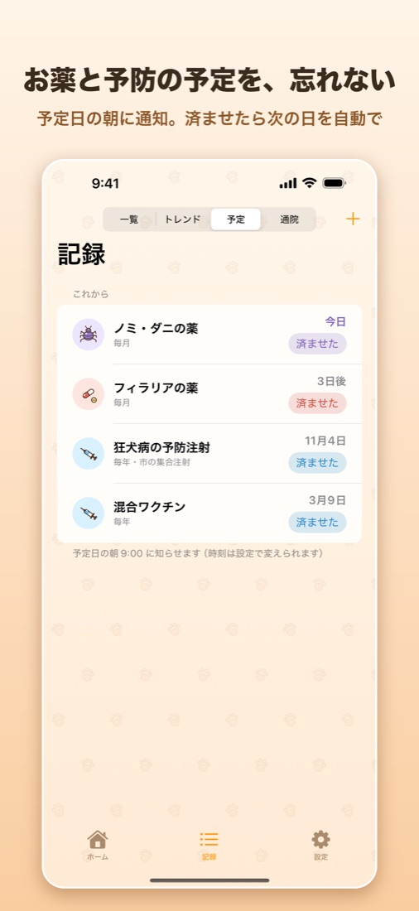
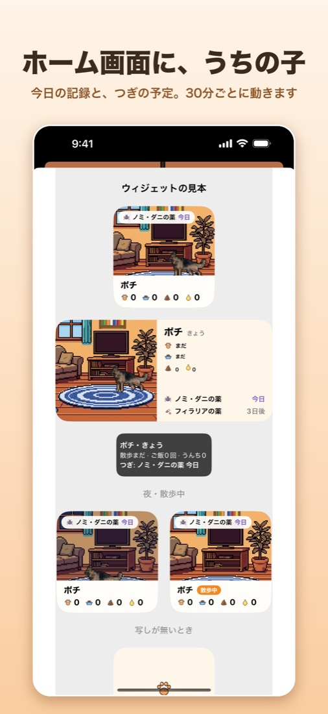
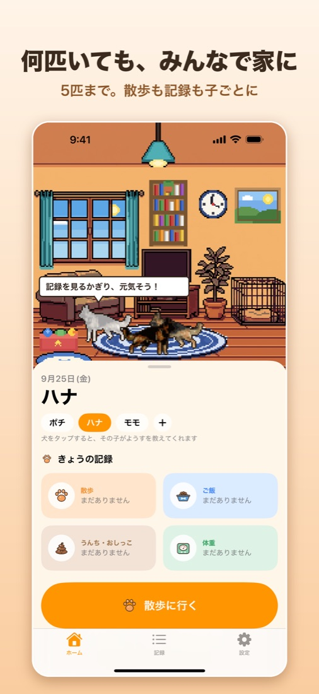
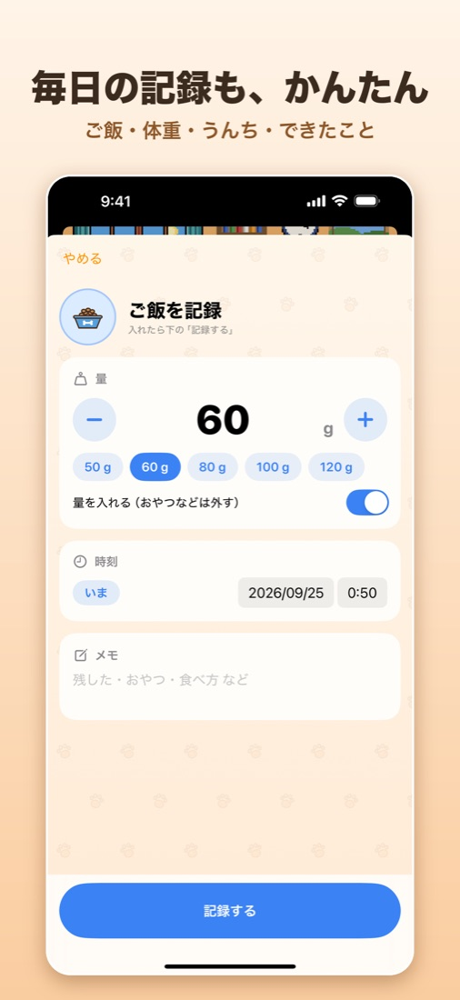

犬の散歩記録・体重・ご飯の日記
散歩するほど家が育つ、犬の記録アプリ。
記録をつけるたびに、ドット絵のうちの子が家の中で暮らす姿を見られます。

散歩の時間、ご飯の量、体重、うんちとおしっこ。
覚えておきたいことを、うちの子と一緒に。

愛犬の横向きの写真を1枚選ぶと（その場で撮ることもできます）、iPhone の中で犬だけを切り抜いて、ドット絵にします。写真はどこにも送りません。
ちょうどいい写真がないときは「見本の犬で試す」から始めて、あとで撮り直せます。

散歩の回数に合わせて、家に家具が増えていきます。犬のベッド、大きな絵、本棚、ランプ、時計、おもちゃ箱、新しいカーテンとラグ。
うちの子の「できること」（ぶるぶる・しっぽふり・のび・ジャンプ…）も増えます。夜は部屋が暗くなり、窓の外には、いる場所の実際の天気が映ります。

「散歩に行く」を押すと、歩いた道・時間・距離を記録します。画面を閉じても、ロック中でも、記録は続きます。散歩中の「うんち」「おしっこ」は、場所つきで地図に残せます。

犬種（151種）を選ぶと、散歩・ご飯・体重の一般的な目安が出ます。この1週間の記録を目安と比べて「少なめ・ちょうど・多め」で確かめられます。
ホームのうちの子をタップすると、「今日はまだ散歩に行ってないよ」など、記録から分かることを教えてくれます。病気の判断はしません。

フィラリアやノミ・ダニの薬、狂犬病の予防注射、混合ワクチンなどの予定を入れると、予定日の朝に通知が届きます。「済ませた」を押すと次の予定日を自動で決めます。
体重の推移や通院、予定をまとめた1枚を、診察のときにそのまま見せたり、PDF にして送ったりできます。

ドットの家とうちの子を、ホーム画面のウィジェットに置けます。今日の記録と、つぎの予定が見えます。うちの子の場所と姿は、30分ごとに変わります。

犬は5匹まで登録できます。みんなで家にいて、一緒に散歩に行けます。記録は子ごとに残ります。

ご飯・体重・うんち・できたことを記録できます。ご飯の目安は、フードの袋に書いてある1日の量か、体重とフードのカロリーから計算します。
記録はすべて iPhone の中に保存され、サーバーに送られることはありません。
散歩のあと、